Images, Figures, and Visuals
Managing Your Image Assets
Intro
About
Many scientific data are inherently visual, and the ability to create and communicate using images is central to prepraring presentations and publications.
In data science, images are not just decorative; they represent critical research outputs (plots, charts, diagnostic data) and must be handled with strict reproducibility and governance rules.
General Image Types
Two Main Kinds of Image Formats
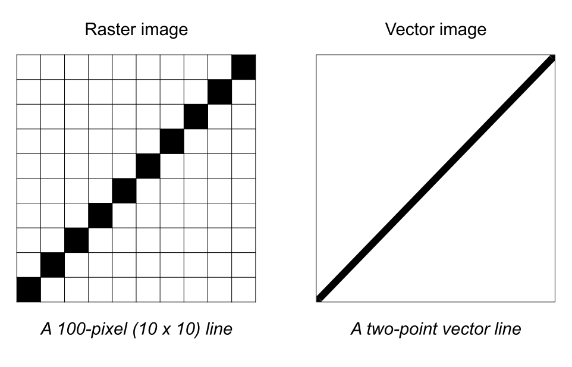
Raster Format
Raster-based
- Also pixel-based or raster art.
- Made of a uniform grid of colored pixels.
- They have a fixed resolution, so they distort when resized.
- Scaling them up introduces pixelation and blurriness.
Vector Format
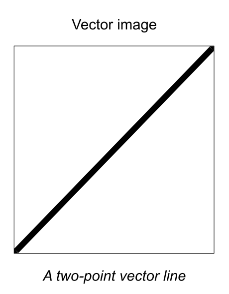
Vector-based
- Defined by mathematical formulas (lines, curves, points).
- Made of independent editable lines, curves, and sahpes.
- They are infinitely scalable without losing quality.
- They remain sharp when resized.
Demo (in R)
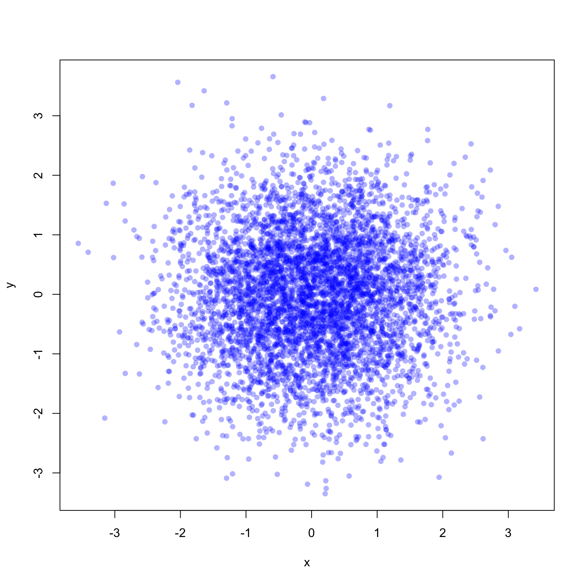
# PNG format
# dimensions in pixels
png("scatter_plot_png.png",
width = 800, height = 700)
plot(x, y, pch = 16,
col = rgb(0, 0, 1, 0.3),
main = "PNG")
dev.off()
Zooming-In Comparison
JPEG
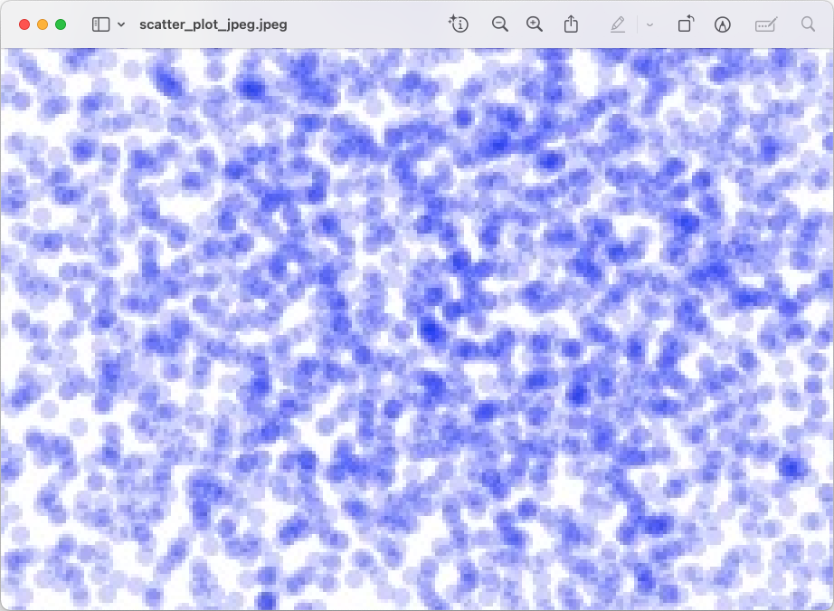
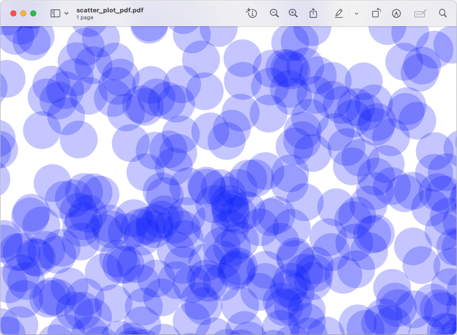
Two Main Kinds of Image Formats
Raster-based
- Image consists of an array (grid) of pixels with information such as color for each pixel.
- Distorted when resized.
- File examples: PNG, JPEG, TIFF, BMP, WebP.
- Will produce much smaller files if the image is very complex.
Vector-based
- Image is described by a set of mathematical shapes
- No distortion when resized
- File examples: PDF, SVG.
- Better for images that need to be viewed at a variety of scales.
It’s easy to convert a vector format to a raster version, while the reverse is very difficult if not impossible.
Plotting Graphics
Plotting Graphics Pipeline
When you execute a plotting command on screen, your code starts an abstract mathematical pipeline that hands data down to your operating system’s window manager and physical graphics card.
Whether you are using Python, R, or MATLAB, the computer follows the exact same hidden architecture to turn numbers into glowing pixels. Here is the step-by-step journey of a plot from code to monitor.
Step 1) Object Creation
When you type a command like plot(x, y) or plt.scatter(x, y), the software environment initializes an abstract memory object.
- What happens:
- The language allocates RAM to store the visual properties of your plot.
- It creates an internal tree structure containing the coordinates, line styles, font colors, and axis bounds.
- The State:
- At this point, nothing is drawn.
- The plot exists purely as abstract structure in your environment’s memory.
Step 2) The High-Level Engine & Backend Selection
The software now looks for an instructions manual on how to translate the abstract memory tree into a visual layout.
It uses a Backend Architecture to make this link.
In Python (Matplotlib): It looks at your active backend configuration (e.g., TkAgg, QtAgg, or WebAgg).
In R: It looks for an open graphical display device (e.g., windows on Windows, quartz on macOS, or X11 on Linux).
In MATLAB: It checks the Graphics rendering hardware setting (OpenGL or Painters).
Step 3) Geometry & Vector Path Generation
The selected engine processes the numbers into basic geometric shape vectors. Think of this step as the “sketch” step.
What happens: The backend converts your data coordinates into screen-relative coordinate points. It determines exactly how many centimeters or pixels wide the bounding box should be, calculates the positions of axis ticks, and converts your data path into a series of explicit path instructions (e.g., “Move pen to coordinate A, draw line to coordinate B”).
Calculations: Vector calculations for text fonts are processed here to determine exact character spacing.
Step 4) Canvas Initialization & Window Handshake
Before anything can be visible, the software needs a container on your desktop.
The Handshake: The graphics backend talks directly to your operating system’s native User Interface (UI) toolkit (like Win32 on Windows, Cocoa on Mac, o r GTK/X11 on Linux).
The Result: The operating system opens an empty window frame on your desktop, reserves that physical screen space, and gives the graphics backend a dedicated memory canvas area (a “framebuffer”) to draw on.
Step 5) Rasterization & Hardware Acceleration
This is where vector math transforms into actual pixels. The graphics engine translates smooth vector paths into a grid of colored dots. Think of this step as the “coloring” step.
The GPU’s Role: Modern backends pass the vector paths directly to your computer’s GPU using open standards like OpenGL or DirectX.
The Math: The graphics card instantly computes every single pixel intersect, applies anti-aliasing (blending edge pixels to make diagonal lines look smooth instead of jagged), and fills the framebuffer with raw color data (RGB values).
Step 6: The Compositor & Monitor Refresh
The final raw color grid sits in your RAM or VRAM waiting to be displayed. Think of this as the “Display” step.
What happens: The Operating System’s Window Compositor (like Desktop Window Manager on Windows or Quartz Compositor on Mac) grabs your plot window’s pixel data, mixes it with your open browser window, wallpaper, and mouse pointer, and builds the unified view of your entire desktop screen.
The Output: The display hardware pushes those numbers out to your physical monitor, matching its refresh rate (e.g., 60Hz or 140Hz), turning on the physical LEDs or liquid crystals on your glass screen.
Compression in Raster Images
Compression Types
- Raster image files tend to go through a compression process.
- Why? Because uncompressed raw images are massive and consume too much storage space, network bandwidth, and memory.
- For example: without compression, a standard smartphone photo would be around 36 megabytes (MB) instead of 2 MB, making it impossible to email, slow to load on a website, and quick to fill up a hard drive.
- There are 2 main types of compression
- Lossless
- Lossy
Lossless Compression (Perfect Quality)
Lossless compression works by finding repetitive patterns in the image data and rewriting them more efficiently
Imagine a row of 100 solid blue pixels. Instead of saving “blue, blue, blue…” 100 times, a lossless algorithm rewritten as “100 blue pixels”
File Size Reduction: Modest (usually 20% to 50% smaller)
Best Used For:
- Graphics with text, sharp edges, and solid colors.
- Logos, icons, and digital illustrations.
- Master files and archives where quality cannot be compromised.
Common Formats: PNG, GIFF, TIFF
Lossy Compression (Maximum Space Savings)
The human eye is highly sensitive to changes in brightness, but less sensitive to subtle changes in color shading.
Lossy compression exploits this by permanently deleting data that the human eye is not very good at noticing.
File size reduction can be substantial (e.g. 80% to 90% smaller than the original)
Best Used For:
- Photographs with complex textures and millions of colors.
- Website images to ensure web pages load quickly.
- Social media sharing and email attachments.
Common Formats: JPEG, WebP (lossy mode), and AVIF
Raster Formats and Compression
Uncompressed
- Literal pixel map
- Zero math changes data
- Files are massive
- Examples:
- BMP
- RAW
- Uncompressed TIFF
Lossless Compressed
- Mathematical shorthand
- Shrinks file size
- 100% data identical
- Safe to edit and save multiple times
- Examples:
- PNG
- Compressed TIFF
Lossy Compressed
- Discards data
- Drastically shrinks size
- Permanently deletes data
- Quality drops every time you edit and save
- Examples:
- JPEG
- WebP
- AVIF
Be Careful with JPEG
Loss of Data: Saving a scientific image as a JPEG to save space permanently alters pixel values, which can invalidate digital image analysis (like counting cells).
Loss of Text/Labels: Rasterizing a plot turns text into pixels. If a publisher needs to shrink the chart, the font becomes unreadable. Vector formats keep text as editable, scalable fonts.
Only use JPEG at the very final step for the publication or slide deck.
File Formats and Usage
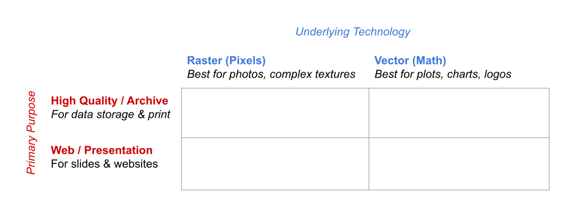
File Formats and Usage
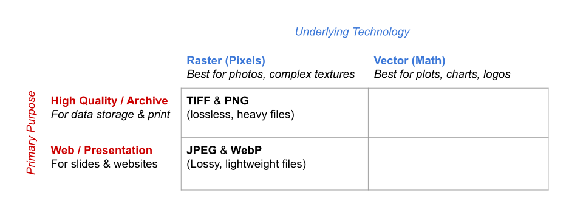
File Formats and Usage
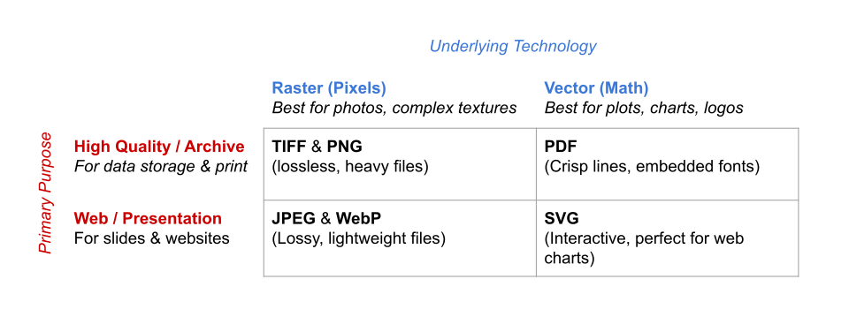
Rules of Thumb
- If it is a photo (microscopy, fieldwork)
- Capture in TIFF or PNG (lossless raster) to preserver data.
- Never use JPEG in the middle of your workflow.
- If it is a plot/graph (R, Python, Matlab)
- Export as PDF or SVG (vector)
- Users can zoom in-out without pixelating
- Text remains searchable
- If it is for the final presentation/website
- Convert copies to WebP or JPEG (lossy raster)
- Slides and website load instantly
Resolution and Dimensions
Image Resolution and Dimensions
At some point you will have to deal with the question of resolution and size.
Definitions:
- Pixel dimension: the number of pixels along the X and Y axes of the image.
- Physical size: the size that the image appears on a printed page (e.g. in inches, or centimeters, or millimiters)
- Resolution: the size of each pixel, expressed as the number of pixels person unit of physical dimesion, usually called dots per inch (DPI) or pixels per inch (PPI)
- Formula: pixel dimension = physical size x resolution
Resolution and Dimensions
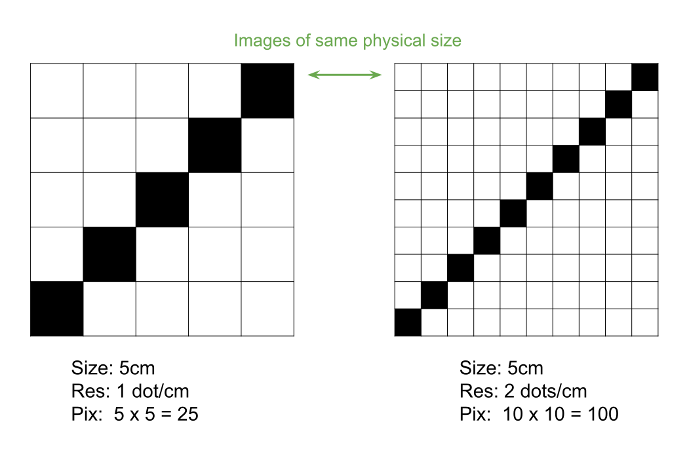
Resolution and Dimensions
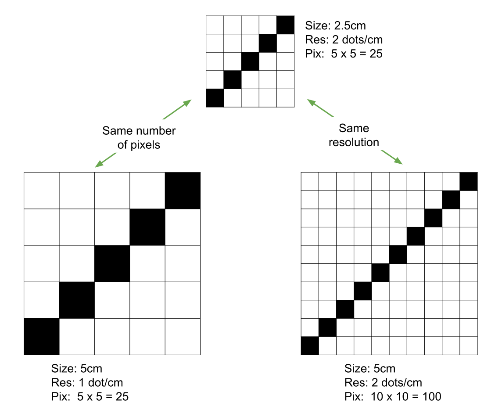
Image Dimensions: Raster -vs- Vector Sizing
Raster
- Sized by fixed pixels (800 x 600 px)
- Stored as a rigid 2D grid matrix of color bytes
- Enlarging the image forces pixels to stretch
Vector
- Sized by physical canvas units (8 x 6 in, cm)
- Stored as a canvas container mapping bounding coordinates
- Scaling recalculates the underlying mathematical equations
Image resizing issues
It is not informative to ask someone for an image “at 300 DPI” without specifying the associated physical measurements.
At 300 DPI, the image could be 100 pixels wide, 30,000 pixels tall or any other dimension.
Yet many journals commonly make such requests! 🤦🏻♂️
Recommendations
- Reproducible Figures
- There should be scripts for every generated figure
- Avoid/Minimize manual edits with graphic design software (Illustrator, Photoshop, AI tools)
- Image Compression and Data Integrity
- Understand difference (pros and cons) between Lossless vs. Lossy compressions
Recommendations
- File Organizing practices
- Separate code from images and figures
- Have dedicated folders
figs/oroutput/ - You may need to export images in both vector and raster formats
Recommendations
- Storage and Version Control of Binaries
- Git is great for handling text files (like .R or .py scripts)
- But it struggles with large images (binary files)
- Every small change to an image forces Git to save a completely new copy, bloating the repository.
- For large image files: Use
.gitignoreto keep auto-generated figures out of the main repository.
Recommendations
- Programmatic Generation of Images
- Take advantage of Quarto or Jupyter Notebooks that automatically handle figure rendering, caching, and paths
Image Colors
About Colors
In addition to deciding whether an image should be pixel or vector (or perhaps both), we also need to consider the document’s color model.
The color model determines what the primary colors are and what happens when they are mixed.
- Additive Color Models: e.g. RGB, HSV, HCL
- Subtractive Color Models: e.g. CYMK
Color Models and Color Spaces
- A color model is the mathematical representation
- It can be represented geometrically: the color Space
- I like to think of the color space as its “volume”
RGB Model
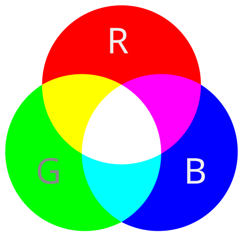
RGM Model
Any color you see on a monitor can be described by a series of 3 values (in the following order)
- A red value
- A green value
- A blue value
RGB Decimal Notation
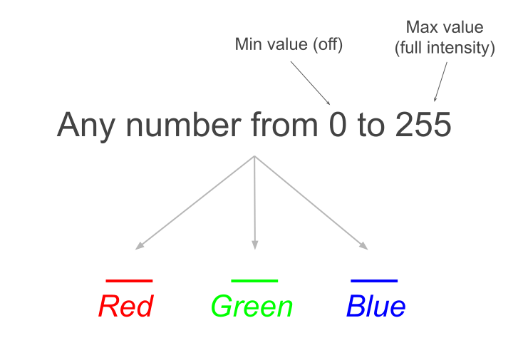
RGB Notations
Why 0 to 255?
- Why do RGB values range from 0 to 255?
- Because of computational reasons
- There are 256 numbers from 0 to 255
- \(256 = 2^8\) (a byte = 8 bits)
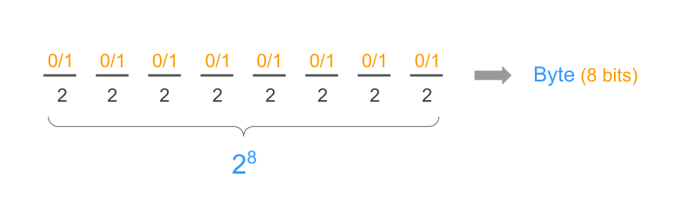
RGB model and its (cubic) geometric space
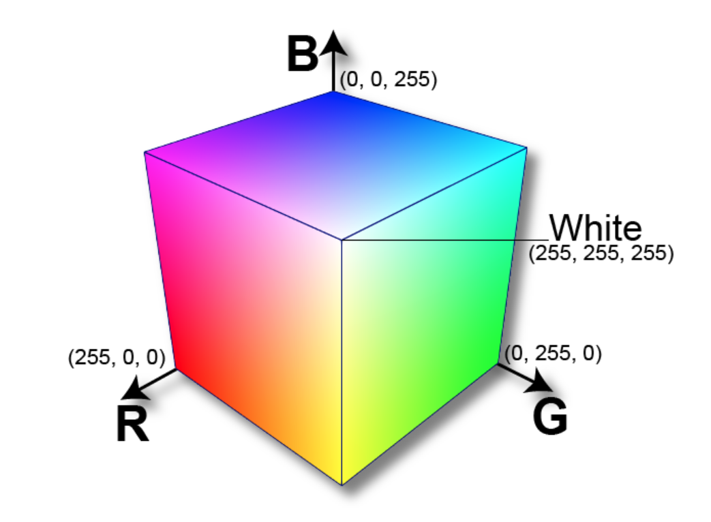
About RGB
- The RGB model provides a full description of color.
- It is a hardware-centric model.
- The RGB model has an interesting mathematical space (or volume) in the shape of a cube.
- However, it does not provide a natural/intuitive way to think about color.
RGB Decimal Notation
In terms of computer memory, to specify a color in RGB decimal notation, you need to reserve a total of 9 “positions”
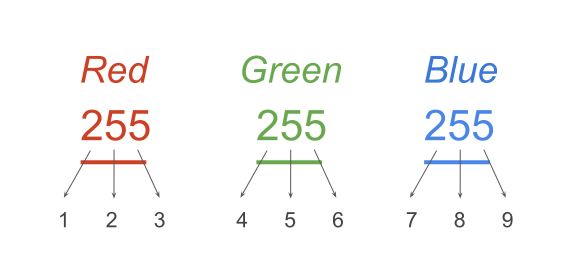
Hexadecimal Notation
To be more memory-efficient, a color can also be specified as a string beginning with a hash symbol # and followed by six hexadecimal digits:
#FF0000(red)#00FF00(green)#0000FF(blue)
Hexadecimal digits reminder:
- The digits 0-9 represent values zero to nine.
- The letters A-F (a-f) represent values ten to fifteen.
Hexadecimal Notation
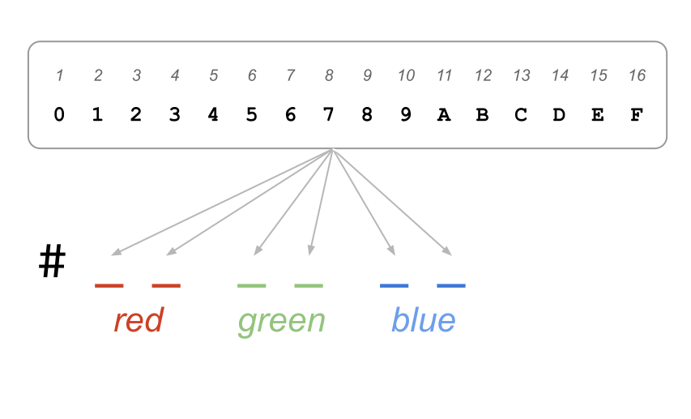
Hexadecimal Notation
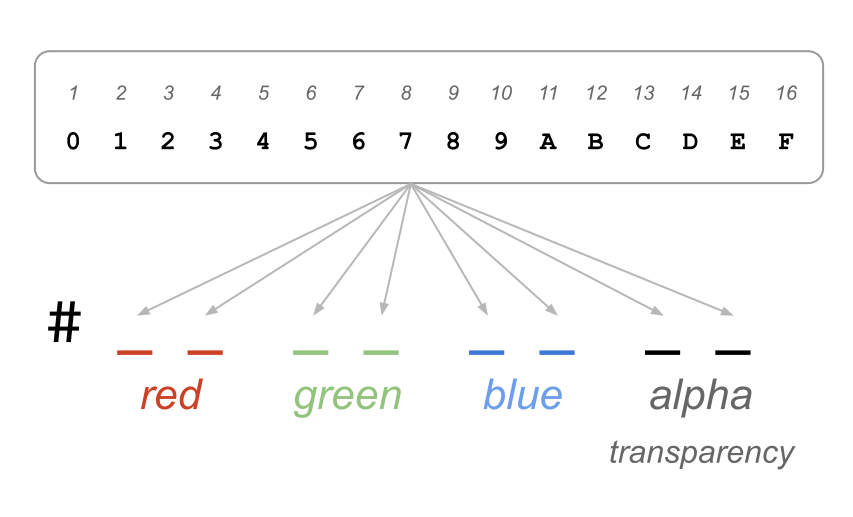